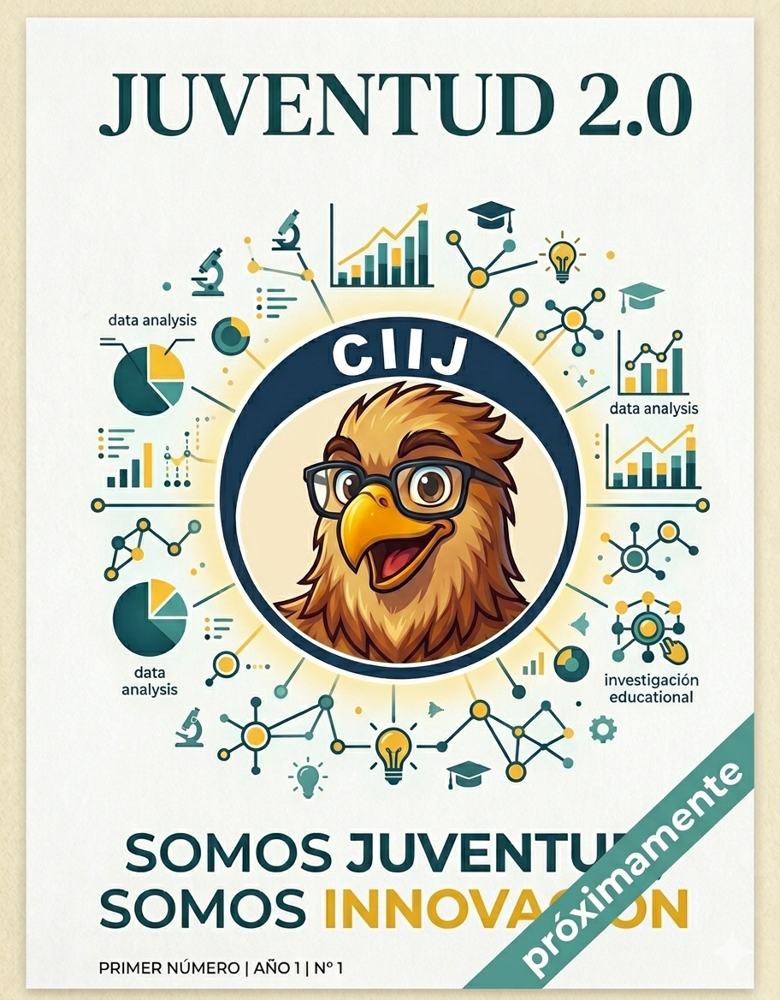

Divulgación Científica
Revista Digital
Un espacio dedicado a la investigación, la innovación pedagógica y el conocimiento compartido.

Edición No. 1
Próximamente disponible
Estamos curando los mejores artículos de investigación y entrevistas exclusivas para nuestro gran lanzamiento.
01
Investigación
Artículos arbitrados sobre el uso de IA en entornos de aprendizaje.
02
Entrevistas
Charlas con expertos en tecnología y transformación educativa.